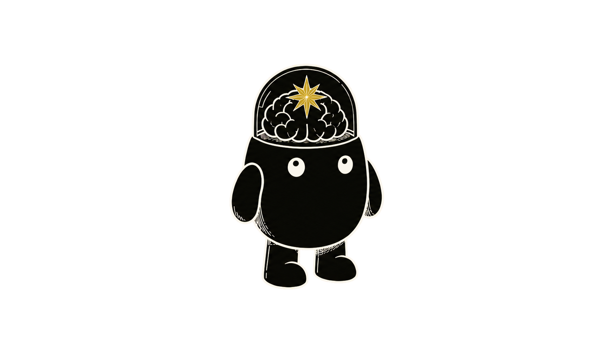
Mi agente personal: la IA que crece contigo
Jairo Torregrosa · Colombia 5.0 ·
Yopal, 27 de agosto de 2026
Esto me llegó a las 7 de la mañana.
AINews, 24 de agosto: 50 skills reducen el pass rate a 0,55 y llevan la latencia media a 1.290 segundos
Soy Jairo. Marley es mi asistente.
Samario en Bogotá · Ingeniero de IA en Mercado Libre
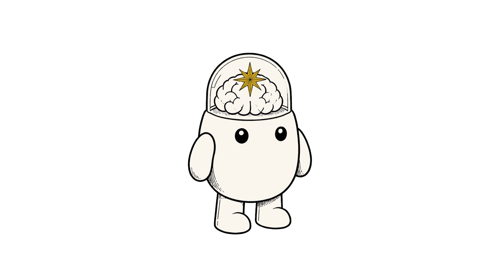
Al final van a poder explicar tres cosas.
- Qué es un agente.
- Cómo armé el cuerpo de Marley.
- Por qué funciona como mi asistente.
ChatGPT es un cerebro detrás de una ventanilla.
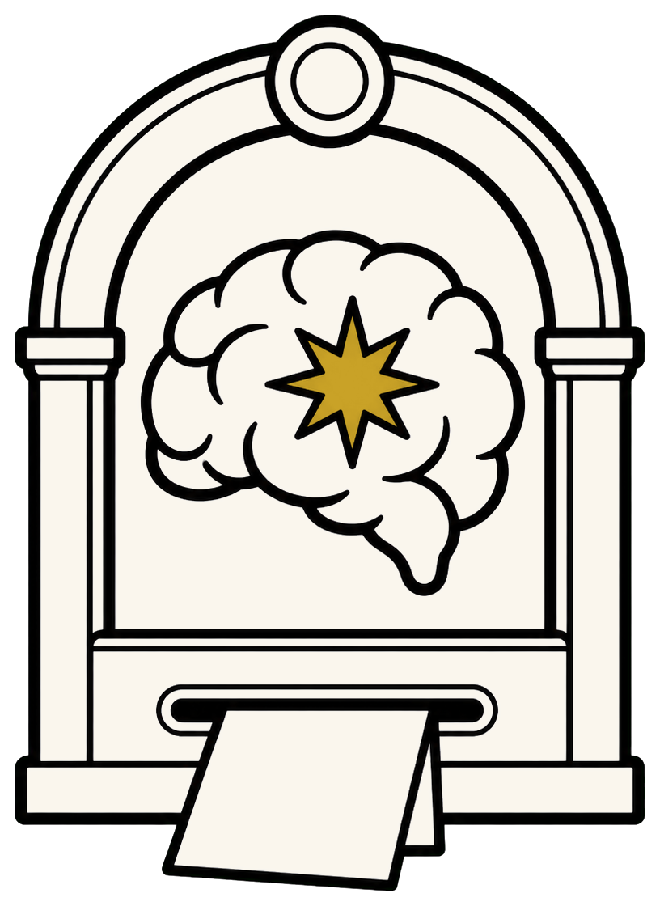
Le pasas una nota. Adivina la mejor respuesta. A veces adivina mal.
Un agente es un cerebro con cuerpo.
El cerebro se alquila y vive en la nube. El cuerpo lo armé yo.
Marley, revísame el correo: ¿qué necesita mi atención hoy?
Siempre le hablo por el mismo chat.
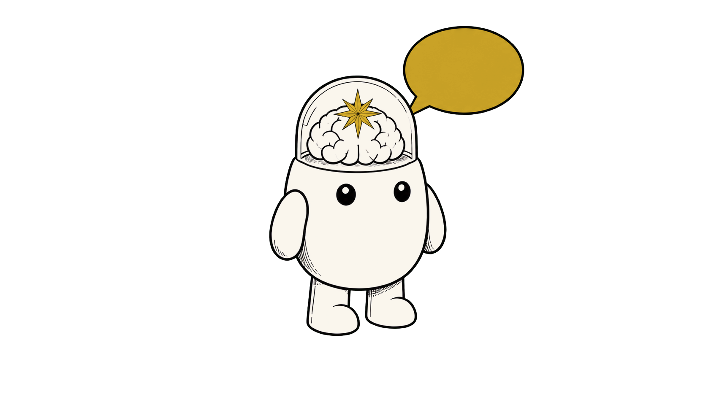
1 conversación 2 manos 3 recetas 4 cuaderno 5 despertadorUn manual mío dice cómo responde y dónde para.
la palabra realTelegram · system prompt
Eres Marley. Leal, presente, sin drama. Marley no implementa código directo.
Le pido que revise mi correo.
Sus manos usan mi correo, mi Drive y el navegador.
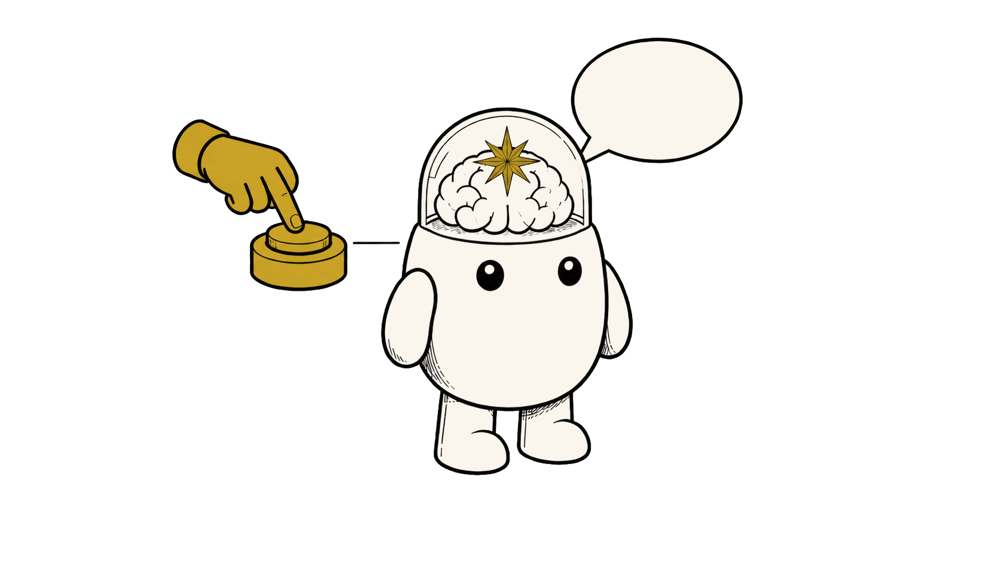
1 conversación 2 manos 3 recetas 4 cuaderno 5 despertador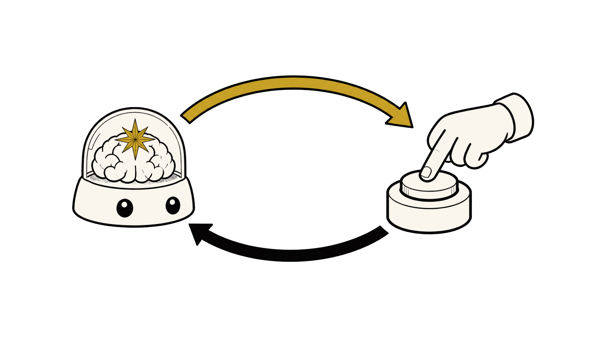
pide un botón lo aprieta yle cuenta qué pasó
Cada botón, con permiso.
la palabra realherramientas (tools) · adaptador (MCP)
Con dos botones ya lee el correo.
La receta le dice en qué orden mirar.
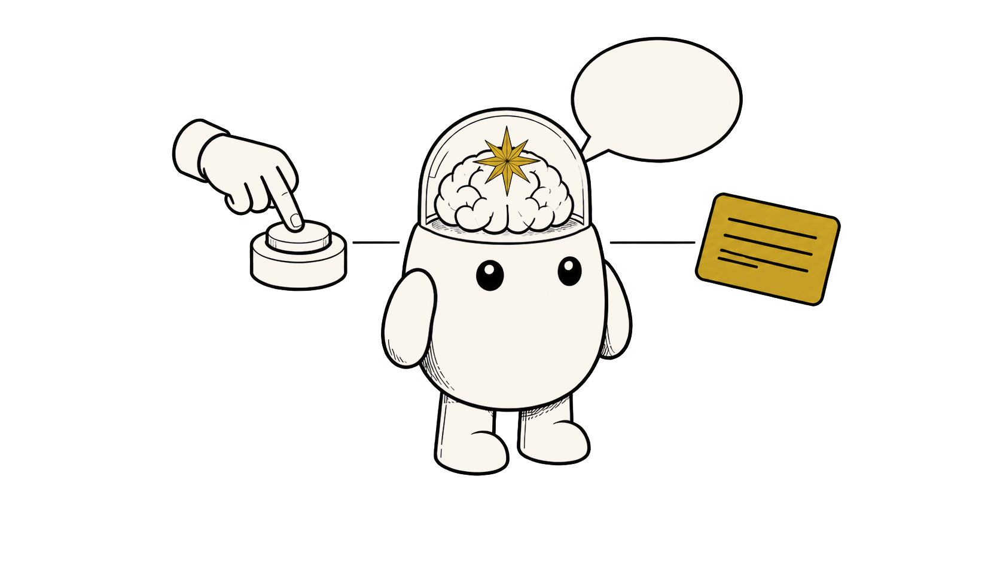
1 conversación 2 manos 3 recetas 4 cuaderno 5 despertador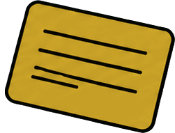
la palabra realskill
1. Cargar el estado: catálogo, pendientes, historial. 2. Buscar en el correo facturas y pagos de 7 días. 3. Comparar y reescribir lo que sigue pendiente.
Ahora responde con mi criterio.
El cuaderno guarda quién soy.
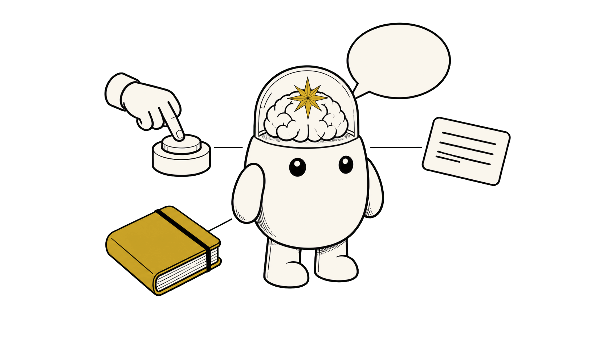
1 conversación 2 manos 3 recetas 4 cuaderno 5 despertadorla palabra realmemoria
Jairo · Bogotá · Ingeniero de IA en Mercado Libre Intereses: café de especialidad, espacio, FC Barcelona Prefiere español denso, respuestas cortas
Arranca donde quedamos.
El despertador lo levanta con una tarea pegada.
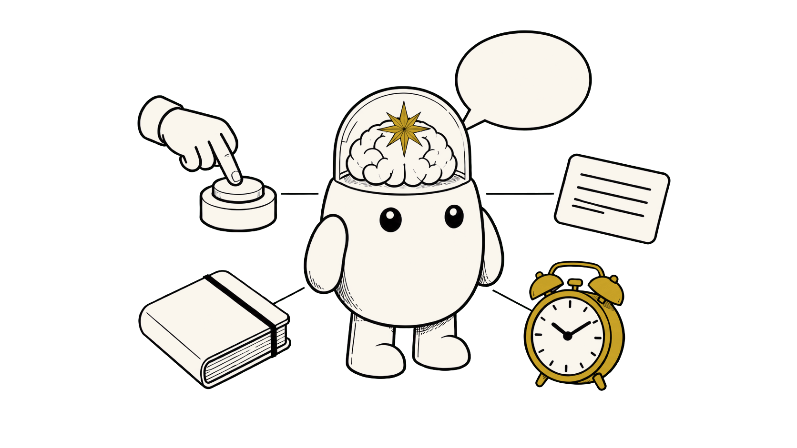
1 conversación 2 manos 3 recetas 4 cuaderno 5 despertador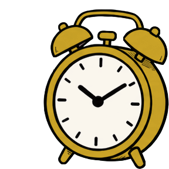
la palabra realcron
- 3:00 · revisa tu trabajo de ayer
- 7:00 · prepara el briefing y mándamelo
La alarma de las 7 puso el cuerpo a trabajar.
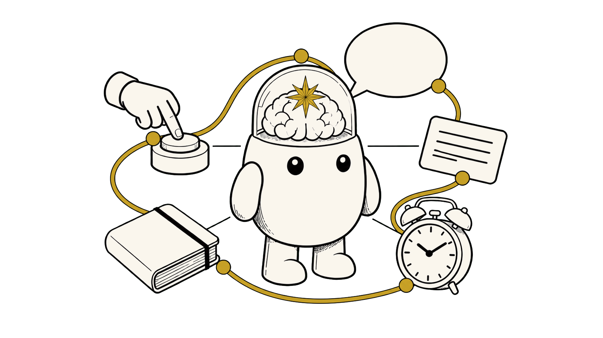
1 2 3 4 5AINews, 24 de agosto: 50 skills reducen el pass rate a 0,55 y llevan la latencia media a 1.290 segundos
A las 3 de la mañana revisa su propio trabajo.
Self-improvement 03:00: corrección adoptada en producción
132 mensajes revisados, 7 sesiones.
Si no hay nada nuevo, responde una sola palabra: [SILENT]
La primera corrección quedó en el lugar equivocado.
"aun así llamó browser_exec primero" "el paso 2 ahora exige cargar jetson-browser" "cargó jetson-browser al inicio. No apareció browser_exec"
Tiene libertad dentro de límites escritos.
- Ajusta él mismo sus recetas y sus alarmas.
- Cambiar código, identidad o claves está bloqueado o espera permiso.
- Pidió permiso, nadie respondió, no ejecutó.
skill_manage: "User-owned skills are off-limits to autonomous" terminal: "BLOCKED. The user has NOT consented to this action." terminal: status "pending_approval", approval_pending: true
Marley funciona como mi asistente.
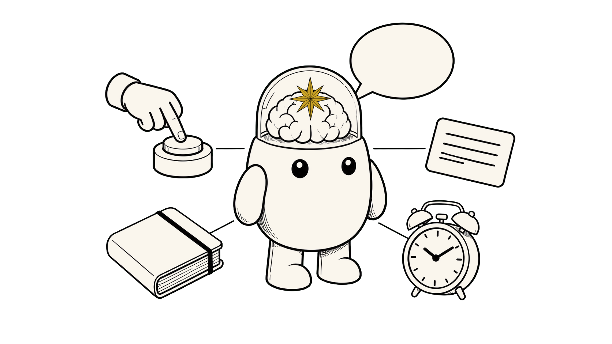
1 conversación 2 manos 3 recetas 4 cuaderno 5 despertador- Me conoce.
- Puede actuar, con permiso.
- Me escribe antes de que yo abra el chat.
Para casi todo, ChatGPT basta.
Un agente vale la pena cuando la tarea se repite.
Lo que le mandas viaja a la nube. Cuesta. Lo delicado pide permiso.
Puedes partir del cuerpo de Hermes.
El programa base es abierto y gratuito. Tú le pones tu chat, tus cuentas, tus permisos y tus tareas.
Tú sigues decidiendo.
- ChatGPT cambió cómo respondemos.
- Los agentes cambian quién responde.
- El que decide sigues siendo tú.
Preguntas.
@jai_torregrosa